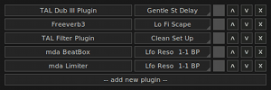
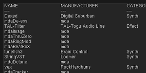

Giada is able to host VST3 and LV2 plug-ins thanks to the JUCE framework. You just have to follow three basic steps:
scan the plug-in directory, that is a folder where your plug-ins reside. You have to do that once, or whenever you add/install new plug-ins. How to do that is described in the Configuration chapter;
browse the available plug-ins by clicking the FX button on each channel or next to master I/O channels;
select the desired plug-in and add it to the stack.
The FX button opens the list of the plug-ins currently in use. This is the place where you add or remove plug-ins to channels and master I/O. Wherever it is placed, when clicked it opens the plug-in stack window.

Each line corresponds to a plug-in. Click on the name of the effect to open the plug-in editor. By default Giada will try to display the graphical interface; in case the plug-in doesn't provide one, another window will show a list of the available parameters tweakable through horizontal sliders.
The drop-down menu on the right lists the presets (also known as programs). The check button enables or disables the plug-in while the up/down buttons shift the plug-in inside the stack. Finally the remove button takes away the plug-in from the stack. Add a new plug-in by clicking on the button at the end of the stack (add new plug-in).

This window shows up when you need to add a new plug-in to a stack, by clicking on the add new plug-in button seen above.
It's a sorted list of all your plug-ins found in the system after the scan, with some useful information like the type, the manufacturer, the category and so on.
How to add a plug-in to the stack: select a plug-in from the list and press enter or click on the add button.
This window also reports when missing or unknown plug-in are present. If a previously scanned plug-in is missing or unloadable from your system, its name will be striked out. If a patch contains unknown plug-ins, they will be listed at the bottom of the plug-in list window, surrounded by several question marks (?).
You can load an unlimited number of plug-ins inside Giada; just be aware that they can stress your CPU, compromising the live performance.
Plug-ins must be hosted in compatible environments which means, for example, that a macOS plug-in cannot be loaded in the Windows version of Giada and vice versa. Plugins also require binary compatibility with the host: you can't load a 32 bit plug-ins inside a 64 bit version of Giada and vice versa.